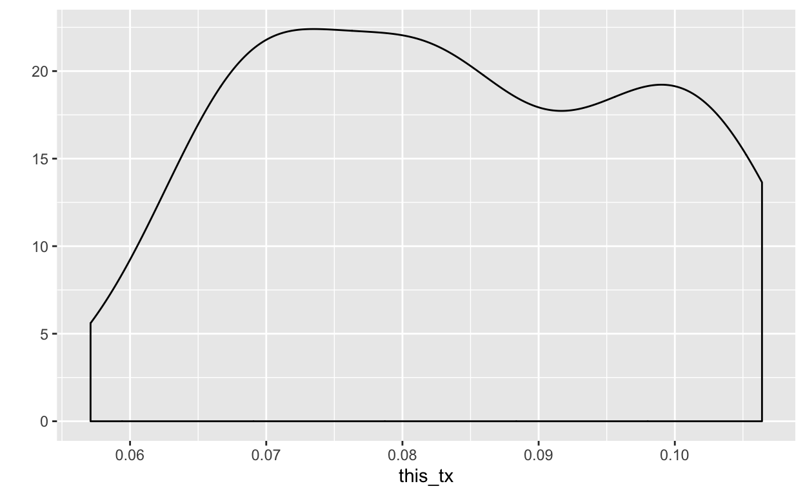
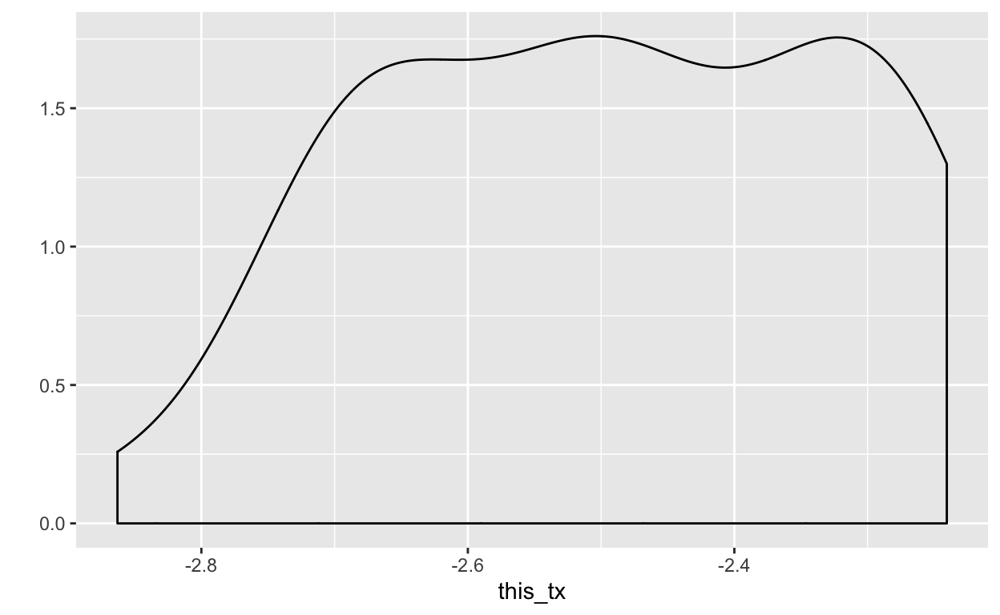
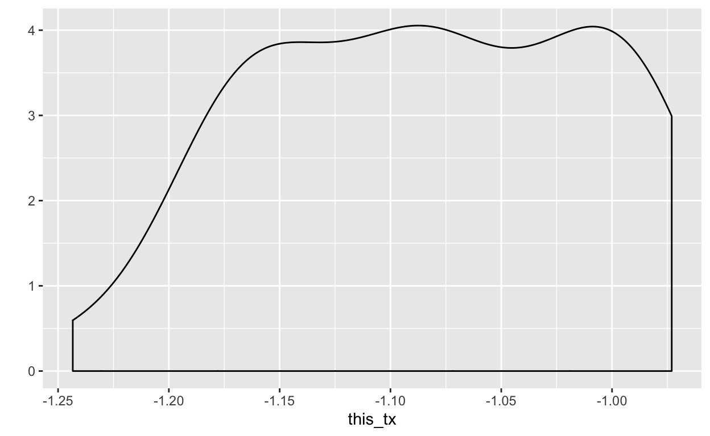
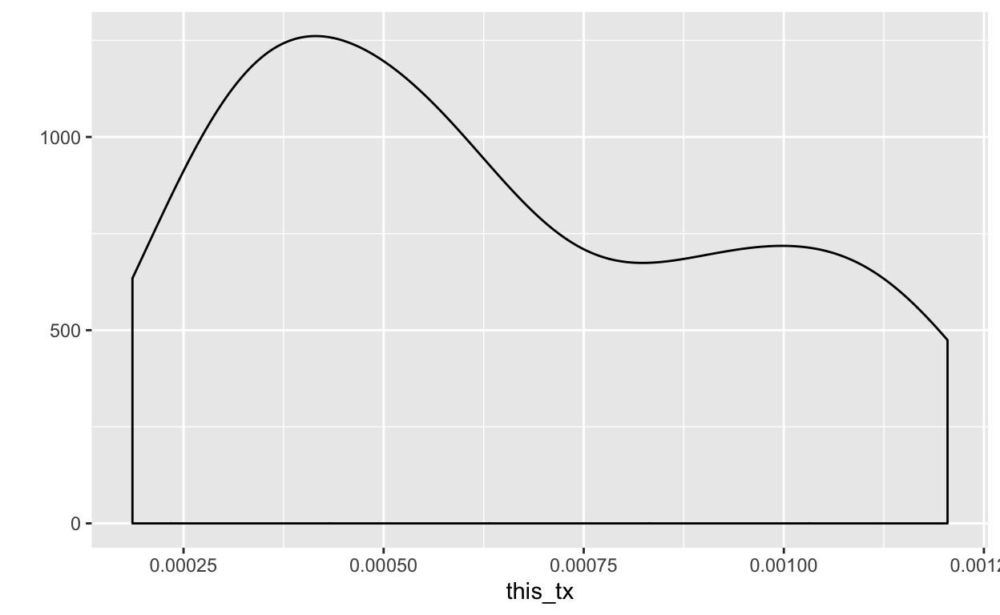
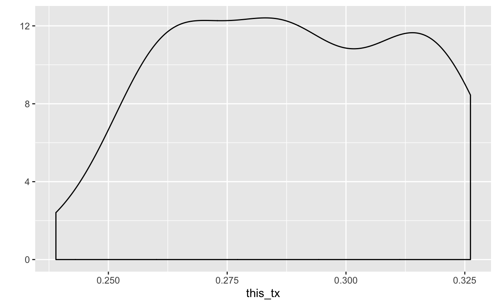
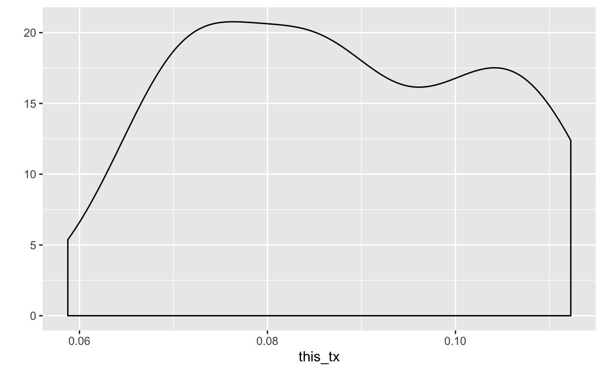

Background
This lesson is both a reference and a tutorial. It contains all the code samples you need to perform a oneway ANOVA on your own data as well as background information such as how to interpret output and which graphs you might want to use to demonstrate results (and in some cases which graphs not to use).
What kinds of Variables work with oneway ANOVA
One scalar (a.k.a. “measurement”) variable.
One nominal (a.k.a. “categorical”) variable
The nominal variable divides the measurements into two or more groups. The oneway ANOVA tests whether the means of the measurement variable are the same for the different groups.
Null and Alternative Hypotheses
- H0: The means of the measurement variable are the same for the different categories in the nominal (a.k.a. “categorical”) variable.
- HA: The means are not all the same for the different categories in the categorical variable.
When to use an ANOVA
Analysis of variance (ANOVA) is the most commonly used technique for comparing the means of groups of measurement data. You can analyze lots of different experimental designs with different kinds of ANOVA. Here we will discuss only the simplest: the oneway ANOVA.
Hint: If you have just one professor and three classes, then the nominal variable (professor) is a constant. You need a nominal variable with two or more groups and a measurement variable to perform an ANOVA.
In a oneway ANOVA (also known as a one-factor, single-factor, or single-classification ANOVA), there is one measurement variable and one nominal variable. You make multiple observations of the measurement variable for each value of the nominal variable.
For example, here is some data on a shell measurement (the length of the anterior adductor muscle scar, or AAM length, standardized by dividing by mean length) in the mussel Mytilus trossulus from five locations: Tillamook, Oregon; Newport, Oregon; Petersburg, Alaska; Magadan, Russia; and Tvarminne, Finland.
The nominal variable is invisible but implicit in the data structure. It’s location, with the five values Tillamook, Newport, Petersburg, Magadan, and Tvarminne. There are 6 to 10 observations of the measurement variable, AAM length (aam), from each location. Again, aam is implicit: you won’t find a column called “aam” (until we make one), but all the values in the columns we do have are values for aam. The data needs a bit of munging to be ready for analysis.
How to Prepare your Data for a oneway ANOVA in R
You should, before any call to a statistical function, ensure that the data is in the correct format for running the analysis. For an ANOVA, remember, you should have one nominal (a.k.a. “categorical”) variable variable with 2 or more categories and one measurement (a.k.a. “scalar”) variable.
Start by looking at the data again.
musselsTo use the language of tidyverse’s gather and spread functions, we have a bunch of “key” variables that should actually be levels in a location variable. And we have a bunch of “values”, anterior adductor muscle (AAM) scar lengths, that should actually be the aam variable.
To summarize, we will convert the implicit variable location into a factor variable and the implicit variable aam into a scalar variable.
The terms “key” and “value” as used in gather and spread have proven difficult to communicate to many R users. The folks who created the tidyverse therefore set up some new functions, pivot_longer and pivot_wider, that they hoped would prove easier for people to understand. The gather and spread functions aren’t being maintained any more. You might have learned them elsewhere, but you may want to learn the new functions now.
So your first step may be to check out our lesson about pivot_longer, if you haven’t used it before, to transform a wide data set to a narrower, longer one. Your work will still be here when you get back.
Convert Wide Data to Long Data by using pivot_longer
Using the method from Pivot Longer, enter the code for making the the wide version of mussels longer here. Store the output from your call to pivot_longer in long_mussels.
Remember to set the new location variable in long_mussels to be a factor once you’ve created long_mussels.
If you haven’t time to do the pivot_longer lesson, use the Hints buttons to teach yourself the proper syntax for the pivot_longer function.
Make sure you enclose your assignment commands in parentheses so you can see what they are doing without having to add another line to display results.
long_mussels <- pivot_longer(data = ...,
cols = ...)(long_mussels <- pivot_longer(data = mussels,
cols = names(...)))(long_mussels <- pivot_longer(data = mussels,
cols = names(mussels),
names_to = ...,
values_to = ...))(long_mussels <- pivot_longer(data = mussels,
cols = names(mussels),
names_to = "location",
values_to = "aam"))(long_mussels <- pivot_longer(data = mussels,
cols = names(mussels),
names_to = "location",
values_to = "aam"))
(long_mussels$location <- as.factor(long_mussels$location))Now you have a beautiful data set with the two variables of interest. One variable is a factor (a categorical or nominal variable) and the other is a scalar or measurement variable. Now let’s visualize this data set.
Data Visualization for an ANOVA
As is typical with R, there are many ways to visualize the data. I’ll show you two of the easiest here.
Quickly Visualize the Data with a Boxplot
You can quickly visualize long_mussels with a boxplot using the R formula interface (aam ~ location) in a call to boxplot. Send boxplot that formula and tell it that the data is long_mussels.
boxplot(...)boxplot(aam ~ ..., ...)boxplot(aam ~ location, data = ...)boxplot(aam ~ location, data = long_mussels)You now have a beautiful, clean visualization to provide along with the results of your ANOVA.
To learn more about base plotting, see our lessons Base Graphics and Base Plotting System. For a discussion of data visualization principles, see Principles of Analytic Graphs. To learn how to plot in ggplot2, see ggplot2 Part 1, ggplot2 Part 2, ggplot2 Extras, and Exploratory Graphs.
Quickly Visualize the Data with a Density Plot
Sometimes the most accurate way to compare levels of a variable against each other for the purpose of illustrating your ANOVA is by creating a density plot (which, at one point, was called a “joyplot”).
qplot is a very handy way to use ggplot2 quickly to create a plot. Place ggplot2 in the library, then construct your call to qplot by passing 6 items to it:
dataset equal tolong_mussels
xset equal to the variableaam
geomset equal to the string “density”
colorset equal to the variablelocation
fillalso set equal to the variablelocation
alphaset equal to .25
library(ggplot2)
qplot(...)library(ggplot2)
qplot(data = long_mussels, ...)library(ggplot2)
qplot(data = long_mussels,
x = aam,
geom = "density", ...)library(ggplot2)
qplot(data = long_mussels,
x = aam,
geom = "density",
color = location,
fill = location, ...)library(ggplot2)
qplot(data = long_mussels,
x = aam,
geom = "density",
color = location,
fill = location,
alpha = .25)Many people choose to show their data as boxplots because boxplots are usually cleaner visualizations. However, the density plot provides good information about our data:
- Tvarminne is bi-modal
- Not all the levels are normally distributed
- 11 rows were deleted due to missingness, which means that not all the levels of
locationcontain the same number of observations.
Some of the problems we see are common in small data sets. The fact that we lost 11 rows is also interesting: are we sure we have designed the experiment properly?
What is alpha? See ggplot2 Part 1, ggplot2 Part 2, ggplot2 Extras to find out. But you can also guess.
If this plot makes you wonder whether our data violates assumptions of ANOVA, then you are thinking like a data scientist! We’ll talk more about assumptions later in this lesson.
Meanwhile, we soldier on.
Perform the ANOVA
The lm function in the native stats package fits a linear model by least squares, and can be used for a variety of analyses: regression, analysis of variance (what we’re doing now), and analysis of covariance, for instance. The analysis of variance is then conducted either with the anova function in the car package for Type II or Type III sum of squares, or with the aov function in the native stats package for Type I sum of squares.
The simplest way to perform the analysis of variance procedure is using aov from the native stats package, accepting all its defaults. To see what the defaults are, type ?aov at the command line.
Try running aov here. First, make sure that you have stats in the library.
Next, store the results of your call to aov (which calls lm, among other things) in the variable fit. Pass aov the formula of interest (the measurement variable “across” or ~ the categorical variable) and the name of the data set in the form data = long_mussels.
Finally, use summary(fit) to see the results.
library(stats)
fit <- ?
summary(fit)library(stats)
fit <- aov(...)
summary(fit)library(stats)
fit <- aov(aam ~ location, data = long_mussels)
summary(fit)(Hint: If you don’t see any results, make sure you have asked to see a summary of fit.)
What does all this mean? Most people quickly focus on the p value, which here is .0036. Apparently we can reject the null hypothesis that the means among the groups are the same.
We also have more information: the test statistic \(\displaystyle F\) (4.78), the degrees of freedom (4, 34), and the sums of the squares and the mean square values for location and for the residuals. When you report ANOVA results, you typically report \(\displaystyle F\), the degrees of freedom, and the \(\displaystyle p\) statistic.
Take note of the fact that 11 observations were deleted due to missingness. The levels do not all have the same number of values in them. Is this a problem? Perhaps. We’ll talk more about that later.
Just for fun, run aov and allow the results to print without first storing them in fit and using summary to format them.
library(stats)
aov(...)library(stats)
aov(aam ~ location, ...)library(stats)
aov(aam ~ location, data = long_mussels)This provides less information than when we summarized fit! That’s why people usually do summarize the fit.
You found something interesting! Now what?
If the analysis of variance indicates an interesting effect of the independent variable (here, location), you can conduct multiple comparisons among the levels of this factor using Tukey-Kramer or Least Significant Difference (LSD) procedures. (The problem of inflating the Type I Error Rate when making multiple comparisons is discussed in the Multiple Comparisons chapter in John H. McDonald’s Handbook of Biological Statistics)
R functions that make multiple comparisons usually allow for adjusting p values. In R you can use the Benjamini–Hochberg (BH) or fdr procedure. See ?p.adjust for more information.
Let’s take a quick look at one method for identifying which pairs of means differ from each other.
Tukey-Kramer post hoc Test
One common way to look at the data in more detail after performing an ANOVA is to compare different pairs of means and see which are significantly different from each other. For the mussel shell example, the overall p value piques our interest. We therefore want to follow up by asking whether the mean in Tillamook is different from the mean in Newport, whether Newport is different from Petersburg, and so on.
It might be tempting to use a simple two-sample t–test on each pairwise comparison that looks interesting to you. However, this can result in a lot of false positives. When there are a groups, there are \(\displaystyle \frac{a^2 -a}{2}\) possible pairwise comparisons, a number that quickly increases as the number of groups increases:
- With 5 groups, you would have 10 pairwise comparisons
- With 10 groups, you would have 45
- With 20 groups, you would have 190 pairs
When you do multiple comparisons, you increase the probability that at least one will have a p value less than 0.05 purely by chance, even if the null hypothesis of each comparison is true.
There are a number of different tests for pairwise comparisons after a oneway ANOVA, and each has advantages and disadvantages. The differences among their results are fairly subtle, so I will describe only one, the Tukey-Kramer test.
The Tukey-Kramer test is probably the most commonly used post-hoc test used with a oneway ANOVA, and it is fairly easy to understand.
In the Tukey–Kramer method, the minimum significant difference (MSD) is calculated for each pair of means. It depends on the sample size in each group, the average variation within the groups, and the total number of groups. For a balanced design, all of the MSDs will be the same; for an unbalanced design, pairs of groups with smaller sample sizes will have bigger MSDs. If the observed difference between a pair of means is greater than the MSD, the pair of means is significantly different.
Perform the analysis with the TukeyHSD function from the stats package. You already have a model in the variable fit. Pass it to TukeyHSD and see what happens. Use the questions below to help you decode the results.
TukeyHSD(...)TukeyHSD(fit)Welch’s ANOVA
If the data show a lot of heteroscedasticity (different groups have different standard deviations), the oneway ANOVA can yield an inaccurate p value; the probability of a false positive may be much higher than 5%. In that case, you should use Welch’s ANOVA.
Use the the oneway.test function from the stats package for a Welch’s ANOVA. Whenever you set var.equal equal to FALSE, oneway.test runs the Welch’s test.
Try it now following these steps:
- Ascertain that the
statspackage is in the library.
- Call
oneway.testand pass it these arguments:- the formula
aam ~ location, as usual
- the name of the dataset (
long_mussels)
- the argument
var.egualset equal toFALSE
- the formula
oneway.test(...)oneway.test(aam ~ location,
...)oneway.test(aam ~ location,
data = long_mussels,
...)oneway.test(aam ~ location,
data = long_mussels,
var.equal = ...)oneway.test(aam ~ location,
data = long_mussels,
var.equal = FALSE)ANOVA Assumptions and How to Check Them
All statistical tests rest upon assumptions about your data. In order to perform them properly, you need to know what assumptions you are making, and be certain that none of your assumptions violate the assumptions of the oneway ANOVA.
Assumption: The Residuals are Normal
oneway ANOVA assumes that the residuals of the observations within each group are normally distributed.
You don’t really need the residuals, though. Simply use qqnorm to make a qqplot. It calculates the residuals for you.
Try it now. Pass long_mussels$aam to qqnorm, then pass it again to qqline. If you can figure out how, make the line red and give it a width of 2. HINT: Type ?qqline at the prompt or just peek at the hints.
qqnorm(...)qqnorm(long_mussels$aam)qqnorm(long_mussels$aam)
qqline(...)qqnorm(long_mussels$aam)
qqline(long_mussels$aam, col = "red", lwd = 2)qqnorm checks the residuals (the \(\displaystyle y\) axis) against what they would be if they were normally distributed (the \(\displaystyle x\) axis). Many statisticians use the “fat pencil rule” to decide whether the data points are close enough to the line to count as normally distributed. Imagine yourself laying a fat pencil along the red line. Does it cover all the dots? If so, you’re good.
This distribution of residuals is right on the edge of acceptable. Let’s pretend it’s not to see what we can do about it.
What to do When the Residuals Are not Normally Distributed
Extensive simulations demonstrate that ANOVA is not particularly sensitive to deviations from the assumption of normality; if you perform a oneway ANOVA on data with residuals that are non-normal, your chance of getting a p value less than 0.05, if the null hypothesis is true, is still pretty close to 0.05. Nonetheless, it’s better if your data are close to normal.
Our next step is to transform the data to see if we can get a better set of residuals.
If you don’t know what a transformation is, try guessing.
Just for fun, try transformating long_mussels$aam in various ways in the sandbox that follows. Send your transformationed data, as well as the non-transformed data, to qplot (see our swirl ggplot2 Part 1 lesson to learn about qplot) to find out whether any of your transformations normalize your data. HINT: To take the natural log of a scalar variable, use log(a_scalar_variable). log is in the base stats package. Type ?log in the sandbox to learn how to play with other logarithms and with exponents.
You can use your own ideas or follow the code in the hints. The code I wrote includes what you can (or already did) learn in swirl Part 4 - Vectors, swirl Part 9 - Functions, swirl Part 10 - lapply and sapply and ggplot2 Part 1. If my code doesn’t make sense to you, try revisiting those lessons.
aam <- long_mussels$aamaam <- long_mussels$aam
log_aam <- log(aam)
log2_aam <- log2(aam)
common_log_aam <- log10(aam)
log1p_aam <- log1p(aam)
log_base_7_aam <- log(aam, base = 7)
aam_squared <- aam^2
aam_cubed <- aam^3
sqrt_aam <- sqrt(aam)
exp_aam <- exp(aam)
expm1_aam <- expm1(aam)aam <- long_mussels$aam
log_aam <- log(aam)
log2_aam <- log2(aam)
common_log_aam <- log10(aam)
log1p_aam <- log1p(aam)
log_base_7_aam <- log(aam, base = 7)
aam_squared <- aam^2
aam_cubed <- aam^3
sqrt_aam <- sqrt(aam)
exp_aam <- exp(aam)
expm1_aam <- expm1(aam)
my_list <- c(aam, log_aam, log2_aam, common_log_aam, log1p_aam, log_base_7_aam,
aam_squared, aam_cubed, sqrt_aam, exp_aam, expm1_aam)#Create and store a bunch of transformations (tx's)
aam <- long_mussels$aam
log_aam <- log(aam)
log2_aam <- log2(aam)
common_log_aam <- log10(aam)
log1p_aam <- log1p(aam)
log_base_7_aam <- log(aam, base = 7)
aam_squared <- aam^2
aam_cubed <- aam^3
sqrt_aam <- sqrt(aam)
exp_aam <- exp(aam)
expm1_aam <- expm1(aam)
#Make a list of tx's
my_list <- c(aam, log_aam, log2_aam, common_log_aam, log1p_aam, log_base_7_aam,
aam_squared, aam_cubed, sqrt_aam, exp_aam, expm1_aam)
# Create a function for plotting a single tx
plot_this_tx <- function(this_tx) {
qplot(data = long_mussels,
x = this_tx,
geom = "density")
}#Create and store a bunch of transformations (tx's)
aam <- long_mussels$aam
log_aam <- log(aam)
log2_aam <- log2(aam)
common_log_aam <- log10(aam)
log1p_aam <- log1p(aam)
log_base_7_aam <- log(aam, base = 7)
aam_squared <- aam^2
aam_cubed <- aam^3
sqrt_aam <- sqrt(aam)
exp_aam <- exp(aam)
expm1_aam <- expm1(aam)
#Make a list of tx's
my_list <- list(aam, log_aam, log2_aam, common_log_aam, log1p_aam, log_base_7_aam,
aam_squared, aam_cubed, sqrt_aam, exp_aam, expm1_aam)
# Create a function for plotting a single tx.
# Input: one variable
plot_this_tx <- function(this_tx) {
qplot(data = long_mussels,
x = this_tx,
geom = "density")
}
# Now use lapply to apply the plot function to each element in my list
lapply(my_list, plot_this_tx)Now take the list of transformed copies of aam and lapply qqnorm and qqline to it. HINT: Create a function that does both qqnorm and qqline to whatever you pass it.
qq_this_tx <- function(this_tx) {
...
}
lapply(...)qq_this_tx <- function(this_tx) {
qqnorm(this_tx)
qqline(this_tx, col = "red", lwd = 2)
}
lapply(my_list, qq_this_tx)Soapbox: The Outlier
No, you can’t just delete it. Don’t get me started.
Too late: Let’s talk about the outlier.
It’s having an impact on the data set. Create a variable called we_are_here and assign to it aam[!is.na(aam) < 0.135] (all the members of aam that return TRUE for not being missing and that are less than 0.135). The outlier has a value of 0.1352, so this logic will exclude it. Then pass we_are_here to qqnorm and qqline (with the same parameters as before).
we_are_here <- ?we_are_here <- aam[!is.na(aam) & aam < 0.1352]
qqnorm(...)
qqline(..)we_are_here <- aam[!is.na(aam) & aam < 0.1352]
qqnorm(we_are_here)
qqline(...)we_are_here <- aam[!is.na(aam) & aam < 0.1352]
qqnorm(we_are_here)
qqline(we_are_here, ..., ...)we_are_here <- aam[!is.na(aam) & aam < 0.1352]
qqnorm(we_are_here)
qqline(we_are_here, col = "red", lwd = 2)Lesson learned: It doesn’t necessarily help to get rid of outliers.
But there’s more to it than that. Unless you have reason to believe the outlier is an erroneous measurement, leave it alone. If it’s true, it’s data. We don’t trim outliers even if certain statistical programs (we name no names) give you the option to do so.
Here’s some code for checking to see if any of the transformations works better with the outlier gone.
#Create and store a bunch of transformations (tx's)
log_we_are_here <- log(we_are_here)
log2_we_are_here <- log2(we_are_here)
common_log_we_are_here <- log10(we_are_here)
log1p_we_are_here <- log1p(we_are_here)
log_base_7_we_are_here <- log(we_are_here, base = 7)
we_are_here_squared <- we_are_here^2
we_are_here_cubed <- we_are_here^3
sqrt_we_are_here <- sqrt(we_are_here)
exp_we_are_here <- exp(we_are_here)
expm1_we_are_here <- expm1(we_are_here)
#Make a list of tx's
my_list2 <- list(we_are_here, log_we_are_here, log2_we_are_here, common_log_we_are_here,
log1p_we_are_here, log_base_7_we_are_here, we_are_here_squared,
we_are_here_cubed, sqrt_we_are_here, exp_we_are_here, expm1_we_are_here)
# Now use lapply to apply the plot function to each element in my list
lapply(my_list2, plot_this_tx)## [[1]]
##
## [[2]]
##
## [[3]]
##
## [[4]]
##
## [[5]]
##
## [[6]]
##
## [[7]]
##
## [[8]]
##
## [[9]]
##
## [[10]]
##
## [[11]]
See? It wasn’t worth it. We gained nothing; in fact we caused the bimodal nature of the data set become more of an issue.
Don’t. Delete. Outliers. (Unless they are wrong. Dead wrong. As in input wrong.)
If no Transformations Produce Normally Distributed Residuals
If none of the transformations you tried made the data look normal enough, you have a couple of choices: run the ANOVA anyway or use the Kruskal-Wallis test. Be aware of these factors if you decide to performa a Kruskal-Wallis test:
- that the Krusal-Wallis test makes the assumption that the different groups have the same shaped distributions (which we now already isn’t true because we did a density plot earlier in this lesson that showed the shapes of the distributions for each level of
locationto be different)
- that the Krusal-Wallis test doesn’t test the same null hypothesis as oneway ANOVA.
Personally, we don’t like the Kruskal-Wallis test; We recommend that if you have non-normal data that can’t be fixed by transformation, you go ahead and use oneway ANOVA; but be cautious about rejecting the null hypothesis if the p value is not very far below 0.05 and if your data are extremely non-normal. You may even want to set alpha to something besides .05, say, .005 (see Reassessing p Values for why this particular number might be a good choice).
Assumption: Homescedasticity
oneway ANOVA also assumes that your data are homoscedastic, meaning the standard deviations are equal in the groups. You should examine the standard deviations in the different groups and see if there are big differences among them. If you have a balanced design, meaning that the number of observations is the same in each group, then oneway ANOVA is not very sensitive to heteroscedasticity (different standard deviations in the different groups). As of this writing, McDonald (from whom we have liberally borrowed [with permission] for this lesson) hasn’t found a thorough study of the effects of heteroscedasticity that considered all combinations of the number of groups, sample size per group, and amount of heteroscedasticity. He has done simulations with two groups, and they indicated that heteroscedasticity will give an excess proportion of false positives for a balanced design only if one standard deviation is at least three times the size of the other, and the sample size in each group is fewer than 10. I would guess that a similar rule would apply to oneway ANOVAs with more than two groups and balanced designs.
Heteroscedasticity is a much bigger problem when you have an unbalanced design (unequal sample sizes in the groups). If the groups with smaller sample sizes also have larger standard deviations, you will get too many false positives. The difference in standard deviations does not have to be large; a smaller group could have a standard deviation that’s 50% larger, and your rate of false positives could be above 10% instead of at 5% where it belongs. If the groups with larger sample sizes have larger standard deviations, the error is in the opposite direction; you get too few false positives, which might seem like a good thing except it also means you lose power (get too many false negatives, if there is a difference in means).
You should try really hard to have equal sample sizes in all of your groups. With a balanced design, you can safely use a oneway ANOVA unless the sample sizes per group are less than 10 and the standard deviations vary by threefold or more. If you have a balanced design with small sample sizes and very large variation in the standard deviations, you should use Welch’s ANOVA instead.
If you have an unbalanced design, you should carefully examine the standard deviations. Unless the standard deviations are very similar, you should probably use Welch’s ANOVA. It is less powerful than oneway ANOVA for homoscedastic data, but it can be much more accurate for heteroscedastic data from an unbalanced design.
Power Analysis
To do a power analysis for a oneway ANOVA is kind of tricky, because you need to decide what kind of effect size you’re looking for. If you’re mainly interested in the overall significance test, the sample size needed is a function of the standard deviation of the group means. Your estimate of the standard deviation of means that you’re looking for may be based on a pilot experiment or published literature on similar experiments. If you’re mainly interested in the comparisons of means, there are other ways of expressing the effect size. Your effect could be a difference between the smallest and largest means, for example, that you would want to be significant according to a Tukey-Kramer test (see “You found something interesting! Now what?” above).
As an example, let’s say you’re studying transcript amount of some gene in these groups:
- arm muscle
- heart muscle
- brain
- liver
- lung.
Based on previous research, you decide that you’d like the ANOVA to be significant if the means are
- 10 units in arm muscle
- 10 units in
heart muscle, - 15 units in brain
- 15 units in liver
- 15 units in lung.
The standard deviation of transcript amount within a tissue type that you’ve seen in previous research is 12 units.
We have supplied two vectors for the analysis: group_means and experiment_var. See what they contain in this next code box.
group_meansgroup_means
experiment_varPerform an analysis with the power.anova.test function from the stats package. You need to specify the number of groups with the groups argument, within group variance (experiment_var) with the within.var argument, between group variance var(group_means) with the between.var argument, the signficiance value with sig.level (use a level of .005) and power with power. Recall that standard deviation is the square root of variance.
Store the results of power.anova.test in pwr_results and surround the entire statement with parentheses so you can see the results as they are stored in the variable. On the next line, type str(pwr_results) so you can see the structure of the results and the variable names you can use to access them.
library(stats)
(pwr_results <- power.anova.test(groups = 5,
within.var = experiment_var,
between.var = var(group_means),
sig.level = 0.005, power = 0.80))
Balanced one-way analysis of variance power calculation
groups = 5
n = 91.3
between.var = 7.5
within.var = 144
sig.level = 0.005
power = 0.8
NOTE: n is number in each groupstr(pwr_results)List of 8
$ groups : num 5
$ n : num 91.3
$ between.var: num 7.5
$ within.var : num 144
$ sig.level : num 0.005
$ power : num 0.8
$ note : chr "n is number in each group"
$ method : chr "Balanced one-way analysis of variance power calculation"
- attr(*, "class")= chr "power.htest"Interpretation: Since there are 5 groups, you’d need 91.301 observations per group to have an 80% chance of finding a significant result if a significant effect is actually there.
Alternatively, if you have no experimental data, you can use the cohen.ES function to estimate effect sizes and the pwr.ANOVA.test function from the pwr package.
# library(pwr)
# effect_size <- cohen.ES(test="anov",size="small")$effect.size
# pwr.ANOVA.test(k = 5,
# f = effect_size,
# sig.level = 0.05, power = 0.80)But I like math. Where’s the math?
The basic idea is to calculate the mean of the observations within each group, then compare the variance among these means to the average variance within each group.
Let’s state that slightly differently: Under the null hypothesis that the observations in the different groups all have the same mean, the weighted among-group variance will be the same as the within-group variance.
As the means get further apart, the variance among the means increases.
The test statistic is F: the ratio of the variance among the group means divided by the average variance within the groups.
\(\displaystyle F = \frac{Var_a}{Var_w}\),
where $Var_a = $ variance among group means and \(\displaystyle Var_w =\) the average variance within the values in each group.
The \(\displaystyle F\) statistic has a known distribution under the null hypothesis, so you can calculate the probability of obtaining the observed \(\displaystyle F\) under the null hypothesis. The shape of the \(\displaystyle F\)-distribution depends on two degrees of freedom:
- the degrees of freedom of the numerator (among-group variance)
- degrees of freedom of the denominator (within-group variance).
The among-group degrees of freedom is the number of groups minus one.
The within-groups degrees of freedom is the total number of observations minus the number of groups.
If there are \(\displaystyle n\) observations in \(\displaystyle A\) groups,
- numerator degrees of freedom is \(\displaystyle n - 1\)
- denominator degrees of freedom is \(\displaystyle n - A\).
For the example data set, there are 5 groups and 39 observations, so
- the numerator degrees of freedom is \(\displaystyle 5 - 1 = 4\)
- the denominator degrees of freedom is \(\displaystyle 39 - 5 = 34\).
In order to check where your results fall under the \(\displaystyle F\) distribution, you need three pieces of information (if you are calculating by hand): the value of \(\displaystyle \frac{Var_a}{Var_w}\), the numerator degrees of freedom (here 4) and the denominator degrees of freedom (here 34).
But you can always take the easy way out and use R to calculate your \(\displaystyle F\) statistic and its accompanying p value for you.
References
This lesson is heavily based with thanks on the works of John H. McDonald (Handbook of Biological Statistics) and Salvatore S. Mangiafico (R Companion to the Biostats Handbook).